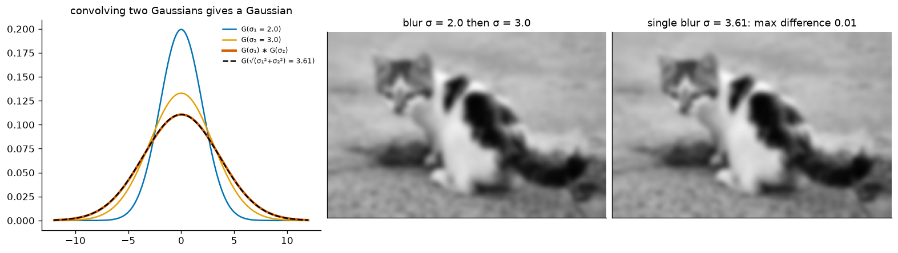
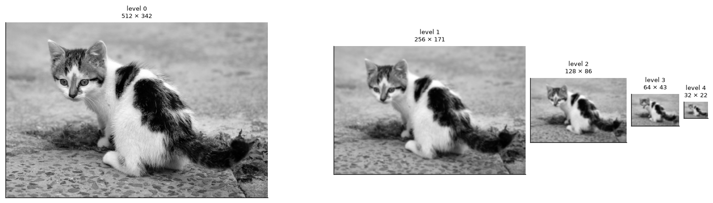
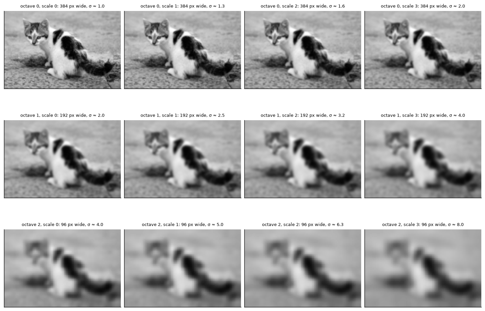
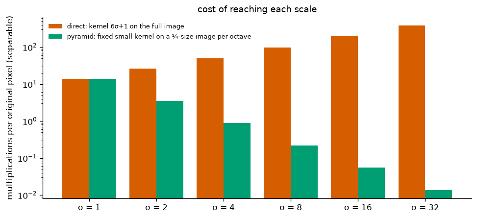

Lesson 03.05
Scale space and image pyramids (supplementary)
How Gaussian scale spaces are built efficiently: composing successive blurs, subsampling into octaves, and why this matters for practical detectors.
Learning outcomes
After this lesson you should be able to:
- use the composition rule for successive Gaussian convolutions;
- explain why a Gaussian pyramid subsamples after blurring;
- distinguish scales from octaves in a scale space built with a pyramid;
- state the cost advantage and the price paid in keypoint localisation.
Building a scale space efficiently
The naïve way to build a scale space is to convolve the original image with successively larger Gaussian kernels. The cost of the large kernels makes this unusable in a practical detector, which may have to run in real time on an embedded device. The escape is a property of the Gaussian: convolving two Gaussians gives another Gaussian,
$$G(\sigma_1) * G(\sigma_2) = G\!\left(\sqrt{\sigma_1^2 + \sigma_2^2}\right). \tag{1}$$
So the level $L(\mathbf{x}; \sigma_3)$ can be formed either directly from the image with a Gaussian of width σ₃, or from the existing level $L(\mathbf{x}; \sigma_1)$ with a Gaussian of width σ₂. Successive small kernels applied to the previous level replace large kernels applied to the original image.

.jpg){kind=link}
The Gaussian image pyramid
When a scale space is built by convolution alone, every level has the size of the original image. But heavily blurred images have lost their fine detail and contain redundant information, so they can be subsampled without losing what is important at that scale. Subsampling reduces the number of pixels at each level, which means that smaller Gaussian kernels can be used and less storage is needed; care is needed to sample the subsampled kernels correctly.

Scale space with an image pyramid
A computationally efficient scale space combines successive convolution with subsampling. Each new blurred image is a scale; the set of scales sharing one subsampling level is an octave. An image pyramid on its own is a separate concept: a series of successively smaller versions of an image formed by blurring and subsampling, used for example by the sliding-window object detectors of Section 4 to give them scale invariance. The disadvantage of building scale space this way is that keypoints found in a subsampled octave need an extra interpolation step to place them in the original image.

A well-known example is the pyramid of Crowley (2002), which uses only a Gaussian of σ = 1: the different amounts of smoothing come from successive convolutions, the difference of Gaussians approximates the Laplacian for feature detection, and after each downsampling the effective σ doubles.

Check your understanding
1. An image is blurred with σ = 3 and then with σ = 4. The result equals a single blur with σ =
Successive Gaussians compose as √(σ₁² + σ₂²) = √(9 + 16) = 5.
2. Why can a heavily blurred image be subsampled without losing important information?
Blurring band-limits the image, which is exactly the condition for safe subsampling from the sampling theorem.
3. In a scale space built with a pyramid, an octave is
Within an octave scales are produced by successive blurs; a subsampling by two starts the next octave.
4. What extra step is needed when keypoints are found in a subsampled octave?
Positions in a subsampled image must be scaled and interpolated to locate the keypoint in the full-size image.
Image credits
- Six weeks old cat (aka), André Karwath, CC BY-SA 2.5
Other figures are generated from synthetic data by the lesson engines.